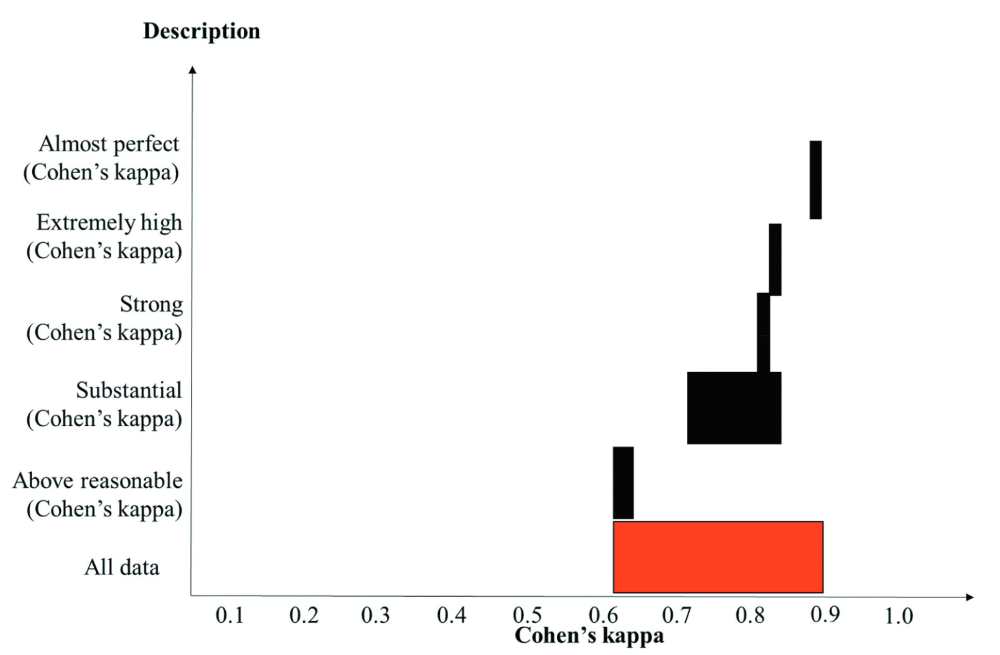

Inter-coder reliability is a continuation of the coding practice process because it determines how similar independent coders evaluate a characteristic of the same message and reach the same conclusion (Tinsley & Weiss, 2000)  . Therefore, the target of coding practice is to achieve as high inter-coder reliability as possible.
. Therefore, the target of coding practice is to achieve as high inter-coder reliability as possible.
Coding protocol
Coding potocol has been previously discussed in this book, but I think it is important to highlight it because this is a source of low inter-coder reliability level. This is especially the case when the coding process and inter-coder reliability are calculated in the QDA software such as NVIVO, ATLAS.ti, and Taguette. These softwares cannot interprete meaning of the coded sentences, and thus coding different sentence even with the same meaning will be considered “disagreement”.
Coding protocol should cover what to find, where to look, what to code. First, to make it easier, research questions can be broken down into subquestions, so it will be easier for the coders to find the information for each part of the research question. Similarly, the codebook can be assigned for each part of the research question. Second, the coding protocol should specify which parts of the article should be coded. For example, the research result can be found in abstract, finding, discussion, and conclusion sections. Therefore, to ensure that each coder code in the same section, the coding protocol should specify which section of the article to prioritize and whether another section needs to be considered when the information is not found in the prioritized section.
Sample size and selection
There is no consensus on the number of articles or interviews to code for for inter-coder reliability purpose. O’Connor & Joffe (2020)  propose a subset of 10-25% of papers or interviews, depending on the size of the data, but I also rarely found any papers reporting more than ten papers for inter-coder reliability. In my projects, I always use 10% with a maximum of 10 papers or interviews.
propose a subset of 10-25% of papers or interviews, depending on the size of the data, but I also rarely found any papers reporting more than ten papers for inter-coder reliability. In my projects, I always use 10% with a maximum of 10 papers or interviews.
Regarding the selection process of articles or interviews for inter-coder reliability purpose, O’Connor & Joffe (2020)  propose that these papers are selected randomly. When there are two research questions and each research question consists of different papers, the same number of articles for each research question should be randomly selected. The random selection ensures that the selected papers represents all papers in the project.
propose that these papers are selected randomly. When there are two research questions and each research question consists of different papers, the same number of articles for each research question should be randomly selected. The random selection ensures that the selected papers represents all papers in the project.
Codebook preparation
When the inter-coder reliability is calculated using QDA software, all coders need to use the same codebook. Therefore, a file needs to be prepared by one coder to be distributed to the others. Upon receiving the file, the user in the file needs to be resetted and set to the current coder. Otherwise, some QDA softwares such as NVIVO, will not be able to display the inter-coder reliability level accurately. These files are later merged to calculate the inter-coder reliability level. Each QDA software has a detailed instruction on how to show the inter-coder reliability. In our coding demonstration, we will use Taguette because it is an open source application, accessed remotely (https://app.taguette.org). In this software, one codebook prepared by one coder, and then this coder can invite the other coders to work on the same codebook.
When the intercoder reliability is calculated manually, the codebook preparation can be more flexible because the data will be moved manually to a spreadsheet and manually assessed for meaning. However, moving this data is much easier when the files can me merged and a record of “who codes which” is available.
Coding process
After the codebook is prepared, each coder work independently. During this process, the team should have a venue to keep discussing about the codebook and coding protocol because there should not be any confusion during this process. In my cases, my team discussed through WhatApp group and had weekly online meeting, which run from the start to the end of the project.
Calculating inter-coder reliability in QDA software
After completing this coding process, depending on the QDA software you use, all files may need to be merged. When we used an online QDA software which enables collaboration, the inter-coder reliability may be calculated immediately.
In NVIVO, the files are merged by importing project, where the project is the file coded by another coder. This feature can be accessed from “Import” and select “Project.” Later, we need to choose “merge” in the option.
Calculating inter-coder reliability manually
One of the shortcomings in using QDA software to calculate inter-coder reliability is that this software cannot determine “agreement” and “disagreement” based on meaning. Therefore, when two coders code a different sentence in a text, the software consider it as “disagreement” even when the meaning is similar. In this section, I will replicate the calculation of inter-coder reliability using Cohen’s Kappa coefficient in NVIVO outside the software. The Cohen’s Kappa calculation used to calculate the intercoder reliabilty in NVIVO is different to the conventional calculation because NVIVO include disagreement in the calculation. For demonstration, we will use the following data.
Interpreting inter-coder reliability
There are some tables which are frequently used to interprete Kappa coefficient. Among others, Cohen (1960), Landis & Koch (1977), and McHugh (2012) established almost the same interpretation of Kappa coefficient, concluded in the following table.
| No | Kappa | Interpretation |
|---|---|---|
| 1 | 0.00 | Poor agreement |
| 2 | 0.01 – 0.20 | Slight agreement |
| 3 | 0.21 – 0.40 | Fair agreement |
| 4 | 0.41 – 0.60 | Moderate agreement |
| 5 | 0.61 – 0.80 | Substantial agreement |
| 6 | 0.81 – 1.00 | Almost perfect agreement |
Based on the systematic literature review conducted by Cheung & Tai (2023), researchers have reported Kappa coefficient of 0.60 – 0.90. The detail is presented in the following figure.

Dealing with low inter-coder reliability level
There are two procedures of dealing with inadequate inter-coder reliability coefficient preposed in the literature. First, Nili et al. (2020) suggest that the discrepancies can be resolved through discussion to reach consensus. Second, O’Connor & Joffe (2020) found that some experts suggest to repeat the cycle of coding for inter-coder reliability purpose until satisfactory inter-coder reliability level is reached.
In my case, my team combined both procedures. First, we inspected why the Kappa coefficient was low by finding out which dimensions we had different interpretation and which coding protocols we did not follow. After we reached a consensus in these discrepancies, we repeated the coding of other randomly selected papers independently and calculated the inter-coder reliability once more. For this purpose, we did not use the papers which we had used in the previous round.